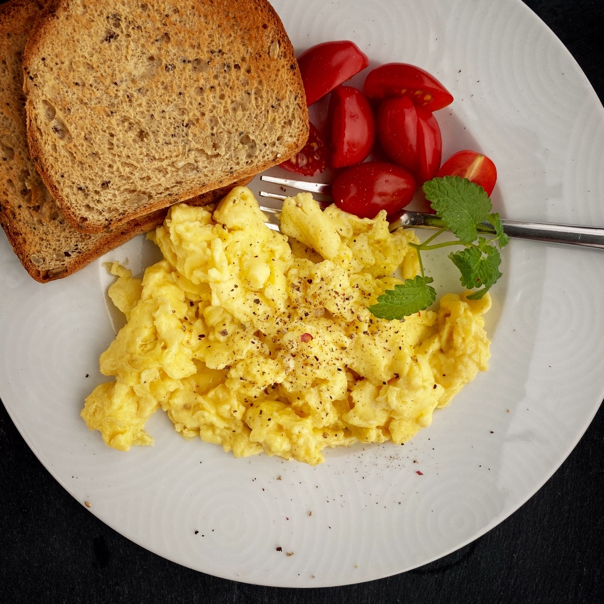

Our Recipes - World's Best Scramble Eggs
I adapted this recipe from a book called
Sydney Food by Biil Grainger.Ever since
tasting these eggs on my 1st visit
to Bill's restaurant in Kings Cross, Sydney. I have
been after the recipe
believe are the
bestscrambled eggs I have ever tasted
This recipe is what I call a "very special breakfast" ;
just look at the ingredients to see why. It has to be
tasted to be belived.

Ingredients
The following ingredients make ine serving:
- 2 eggs
- 1 tablespoon of butter (10g)
- 1/3 cup of cream (2 3/4 ft ounces)
- A pinch of salt
- Freshly milled black pepper
- 3 fresh chives (chopped)
Instructions
- Whisk eggs , cream, and salt in a bowl
- Melt the butter in a non-stick pan over a high heat(taking are not to burn the butter)
- Pour egg mixture into pan ane wait until it starts setting arounf the edge of the pan(around 20 seconds)
- Using a wiiden spatula, bring the mixture into the center as if it were an omelet , and let it cook for another 20 seconds.
- Fold contents in again, leave for 20 seconds, adn repeat until the eggs are inly just done.
- Grind a light sprinkling of freshly milled pepper over the eggs and blend in some chopped fresh chives.